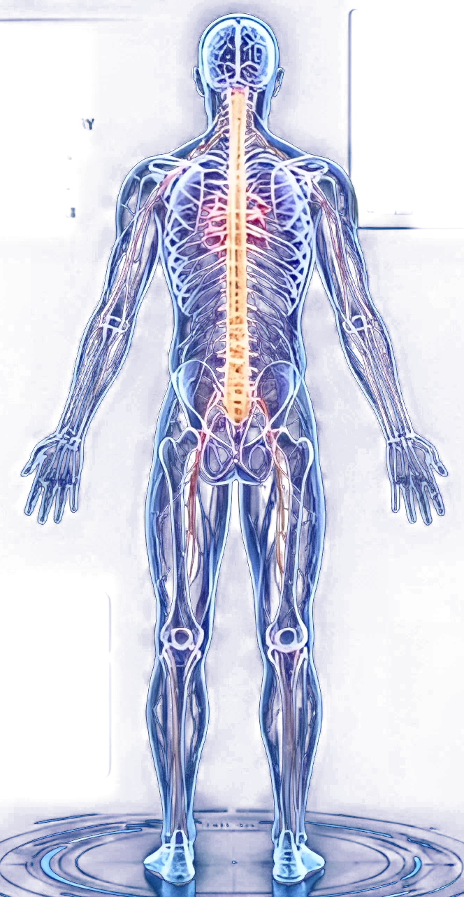

Front view
72 bpm
Resting heart rate, steady rhythm across the scan.
98% SpO₂
Oxygen saturation, read from the respiratory system.
36.6 °C
Core temperature, within the normal range.
See your body from every side, across six systems, with live vitals beside every view.
Start the scan
Resting heart rate, steady rhythm across the scan.
Oxygen saturation, read from the respiratory system.
Core temperature, within the normal range.
Every vertebra traced from the skull to the pelvis.
Muscle tension compared left against right.
Shoulder and hip alignment, checked as you stand.
Neural signal mapped alongside the spinal cord.
The natural S-curve, measured in profile.
Weight distribution from heel to toe.
Heart, lungs, liver and kidneys located in depth.
The digestive tract followed end to end.
Major arteries and veins, from core to limbs.
Readings gathered from head to feet in one pass.
Both hemispheres, seen together.
All six systems combined into one picture of you.
Create an account to save your scans and compare them over time.